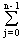
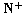
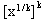
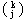
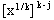
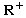
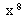

Algebra 1
okt. '97.
smer: R
1. Dokazati da je identicko preslikavanje jedini automorfizam polja Z p .
2. Dokazati:
a) [nx] = [x + j / n], x Î R, n Î 
b) £ [x] £ , x Î , n Î
3. Neka je grupa G reda 31×32
a) Dokazati da ona nije prosta.
b) Ako je G komutativna grupa u kojoj postoji element reda 32, ispitati koliko ima elemenata reda 31, 4×31, 16×31.
4. Neka je p(x) = - 2 Î Q[x]. Odrediti K korensko polja polinoma p(x) i stepen rasirenja [K : Q].